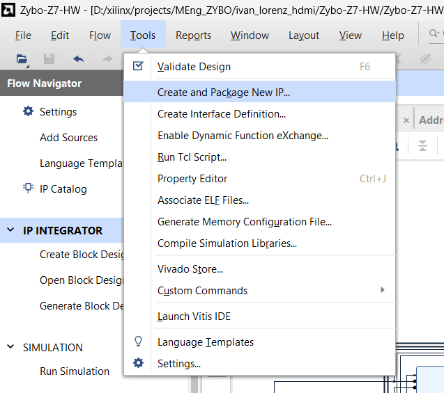
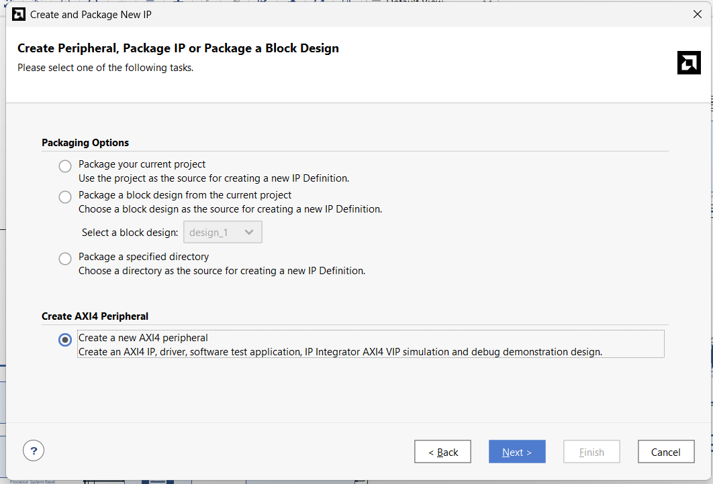
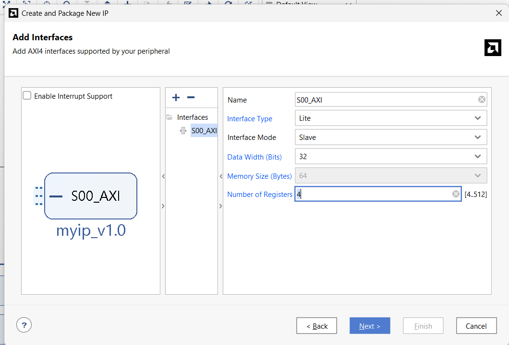
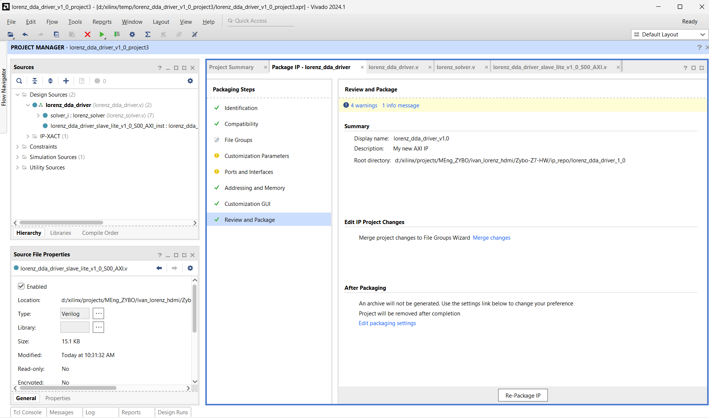

Attempt 1 · the IP and packaging it (09-18)
The IP source that all later attempts reuse, then the Vivado problems hit while packaging and integrating it.
01.1Create the IP skeleton with the AXI4 peripheral wizard
- Vivado: Tools → Create and Package New IP…, choose Create a new AXI4 peripheral (it generates the AXI4 IP, a driver, a software test application and a demo design).
- Add Interfaces: one interface
S00_AXI, type Lite, mode Slave, data width 32, Number of Registers = 7 (allowed 4-512; the capture shows the field at its minimum, 4). Name the IP (the capture shows the defaultmyip; mine islorenz_dda_driver) and put it under the project'sip_repo. - Finish, then open it with Edit IP (packager project). From here: add the numeric core sources, add ports to the slave file, replace the wizard's register block with my 12-register map, and Re-Package IP (next steps).
The wizard produces a working AXI4-Lite slave with correct handshakes, so only the register map and the solver need custom code. The register count in the wizard only sizes the template: 7 registers gave a 5-bit address bus, but my final map (12 words, 7-bit address bus) comes from editing the Verilog, which is why the instance later had to be upgraded from that first revision (Rev 1).



01.2IP source layout
- IP lives in
ivan_lorenz_hdmi/Zybo-Z7-HW/ip_repo/lorenz_dda_driver_1_0:component.xml(core revision 3),hdl/(top + AXI-Lite slave),src/(numeric core),drivers/(BSP driver stub),xgui/,bd/. - Numeric core (
src/):signed_mult.v,integrator.v,lorenz_solver.v. Bus side (hdl/):lorenz_dda_driver.v,lorenz_dda_driver_slave_lite_v1_0_S00_AXI.v. - AXI-Lite address width is 7 bits (
OPT_MEM_ADDR_BITS = 4+ADDR_LSB = 2) = 32 word slots; 12 are used.
Solver logic is kept free of bus code; the slave file only maps registers to the solver's ports.

01.3Fixed-point multiplier
- 27-bit signed operands; full 54-bit product; keep
{sign, bits[45:20]}→ result has 20 fractional bits again.
All state and parameters use the same format: 1 sign + 6 integer + 20 fractional bits (written Q6.20). Value = raw / 220, range about ±64.
`timescale 1ns / 1ps
module signed_mult
(
output signed [26:0] out,
input signed [26:0] a,
input signed [26:0] b
);
wire signed [53:0] mult_out;
assign mult_out = a * b;
assign out = {mult_out[53], mult_out[45:20]};
endmodule01.4Integrator with software load
- One register per variable:
v ← v + functon a step pulse; reloadsInitialOutwhenreset | load.
Reloading only on reset left the solver at (0,0,0) forever (the init registers are zero during reset). load lets software reload without a global reset. Details: I-05 in the full-history site.
`timescale 1ns / 1ps
module integrator
(
input clk,
input reset,
input load, // reload InitialOut without a global reset (software controlled)
input enable, // pulse high for one cycle to take a single integration step
input signed [26:0] funct, //the dV/dt function
input signed [26:0] InitialOut, //the initial state variable V
output signed [26:0] out //the state variable V
);
reg signed [26:0] v1 ;
wire signed [26:0] v1new ;
wire signed [26:0] adder_out;
always @(posedge clk) begin
v1 <= v1new;
end
assign adder_out = v1 + funct; // Adder
assign v1new = (reset | load) ? InitialOut : (enable ? adder_out : v1);
assign out = v1; // Assign output
endmodule01.5Solver: one Euler step per rising edge
step = enable & ~enable_d— software must write CTRL bit 0 as 1 then 0 for every step.dtis used as a right-shift (step size 2−dt), not as a fixed-point value.- dx = σ(y−x); dy = x(ρ−z) − y; dz = xy − βz, each scaled by the shift;
donepulses one clock after a step.
Shifts instead of multiplying by dt saves DSPs; the PS sets pace by how often it steps.
`timescale 1ns / 1ps
module lorenz_solver
(
input clk,
input reset,
input enable,
input load,
output reg done,
input signed [26:0] x_init,
input signed [26:0] y_init,
input signed [26:0] z_init,
input signed [26:0] sig,
input signed [26:0] rho,
input signed [26:0] beta,
input signed [26:0] dt,
output signed [26:0] x_next,
output signed [26:0] y_next,
output signed [26:0] z_next
);
wire signed [26:0] funct_x, funct_y, funct_z;
wire signed [26:0] mult_xrhoz, mult_xy, mult_bz;
reg enable_d;
wire step = enable & ~enable_d;
always @(posedge clk) begin
if (reset) begin
enable_d <= 1'b0;
done <= 1'b0;
end else begin
enable_d <= enable;
done <= step;
end
end
// x' = sigma * (y - x), scaled by dt
signed_mult mult_dx (
.out(funct_x),
.a (sig),
.b ((y_next - x_next) >>> dt)
);
integrator integrator_x (
.clk(clk), .reset(reset), .load(load), .enable(step),
.InitialOut(x_init), .funct(funct_x), .out(x_next)
);
// y' = x * (rho - z) - y, scaled by dt
signed_mult mult_xrhoz_i (
.out(mult_xrhoz),
.a (x_next >>> dt),
.b (rho - z_next)
);
assign funct_y = mult_xrhoz - (y_next >>> dt);
integrator integrator_y (
.clk(clk), .reset(reset), .load(load), .enable(step),
.InitialOut(y_init), .funct(funct_y), .out(y_next)
);
// z' = x * y - beta * z, scaled by dt
signed_mult mult_xy_i (
.out(mult_xy),
.a (x_next >>> dt),
.b (y_next)
);
signed_mult mult_bz_i (
.out(mult_bz),
.a (z_next >>> dt),
.b (beta)
);
assign funct_z = mult_xy - mult_bz;
integrator integrator_z (
.clk(clk), .reset(reset), .load(load), .enable(step),
.InitialOut(z_init), .funct(funct_z), .out(z_next)
);
endmodule01.6AXI-Lite register file
- 12 words at offsets 0x00-0x2C: CTRL, STATUS, X/Y/Z init, σ, ρ, β, DT (writable), X/Y/Z next (read-only).
- CTRL bit 0 = enable (step on 0→1), bit 1 = load (level). STATUS bit 0 = done (one-clock pulse).
- Results are sign-extended to 32 bits on read. All writable registers reset to 0 — software must write parameters before use.
One flat register set is the whole interface, so the PS driver stays a page of Xil_Out32/Xil_In32.
localparam integer REG_CTRL = 0; // R/W bit0 = enable (0->1 edge = one step), bit1 = load init values
localparam integer REG_STATUS = 1; // R bit0 = done
localparam integer REG_XINIT = 2; // R/W signed[26:0]
localparam integer REG_YINIT = 3; // R/W signed[26:0]
localparam integer REG_ZINIT = 4; // R/W signed[26:0]
localparam integer REG_SIGMA = 5; // R/W signed[26:0]
localparam integer REG_RHO = 6; // R/W signed[26:0]
localparam integer REG_BETA = 7; // R/W signed[26:0]
localparam integer REG_DT = 8; // R/W signed[26:0]
localparam integer REG_XNEXT = 9; // R signed[26:0]
localparam integer REG_YNEXT = 10; // R signed[26:0]
localparam integer REG_ZNEXT = 11; // R signed[26:0]
...
// Drive the solver's parameter/enable inputs straight from the register file
assign enable = slv_reg_ctrl[0];
assign load = slv_reg_ctrl[1];
assign x_init = slv_reg_x_init;
assign y_init = slv_reg_y_init;
assign z_init = slv_reg_z_init;
assign sigma = slv_reg_sigma;
assign rho = slv_reg_rho;
assign beta = slv_reg_beta;
assign dt = slv_reg_dt; wire [OPT_MEM_ADDR_BITS:0] reg_raddr = axi_araddr[ADDR_LSB+OPT_MEM_ADDR_BITS:ADDR_LSB];
assign S_AXI_RDATA = (reg_raddr == REG_CTRL) ? slv_reg_ctrl :
(reg_raddr == REG_STATUS) ? {31'b0, done_reg} :
(reg_raddr == REG_XINIT) ? {{5{slv_reg_x_init[26]}}, slv_reg_x_init} :
(reg_raddr == REG_YINIT) ? {{5{slv_reg_y_init[26]}}, slv_reg_y_init} :
(reg_raddr == REG_ZINIT) ? {{5{slv_reg_z_init[26]}}, slv_reg_z_init} :
(reg_raddr == REG_SIGMA) ? {{5{slv_reg_sigma[26]}}, slv_reg_sigma} :
(reg_raddr == REG_RHO) ? {{5{slv_reg_rho[26]}}, slv_reg_rho} :
(reg_raddr == REG_BETA) ? {{5{slv_reg_beta[26]}}, slv_reg_beta} :
(reg_raddr == REG_DT) ? {{5{slv_reg_dt[26]}}, slv_reg_dt} :
(reg_raddr == REG_XNEXT) ? {{5{x_reg[26]}}, x_reg} :
(reg_raddr == REG_YNEXT) ? {{5{y_reg[26]}}, y_reg} :
(reg_raddr == REG_ZNEXT) ? {{5{z_reg[26]}}, z_reg} :
32'b0;01.7Package the IP: Vivado 'Spawn failed'
- Synthesising the IP in the packager produced eight
[Common 17-180] Spawn failed: No error. - Read the IP files (no
exec/spawn); TEMP and project paths were ASCII;hostnameprintedIvan??sLaptop; decodingCOMPUTERNAMEgave code point 8216 (curly quote). - Renamed the PC (plain ASCII) and rebooted — new logs show
Vivado-20976-IvanLaptop.
Vivado creates .Xil/Vivado-<pid>-<host> for every run; a non-ASCII host makes the OS spawn fail with no error code.
$env:COMPUTERNAME
($env:COMPUTERNAME.ToCharArray() | ForEach-Object { [int]$_ }) -join ',' # any value > 127 is a problem (8216 = U+2018)
Rename-Computer -NewName "IvanLaptop" -Restart # plain ASCII, letters/digits/hyphenRelated: Issue I-01
01.8Package the IP: path over 260 bytes
- Next error:
[Common 17-680] Path length exceeds 260-Byte maximum. The IP packager's temp project sat insideZybo-Z7-HW.tmp/lorenz_dda_driver_v1_0_project/...(~175 chars) and Vivado prepended the same run path again (~400+). - Fix: edit/package the IP from a short folder outside
MEng_ZYBO; delete the stale*_project*folders;substalone is not enough because of the doubling.
Path problems show up only in the IP packager's synthesis, not in the main project.
Related: Issue I-02
01.9Integrate: instance upgraded against a stale definition
ip_upgrade.logsaid the instance went from Rev 13 to Rev 1 and address ports shrank 7 → 4 bits, althoughcomponent.xmlwas Rev 3 / 7-bit.Zybo-Z7-HW.xprlisted four overlapping repo paths, one pointing at a deleted copy. Fix: two paths (../ip_repo,Zybo-Z7-HW.ipdefs/repo), rebuild the catalog, checkcore_revision, thenupgrade_ip→ Rev 1 → 3 and width 7. Typing vendorxilinxinstead ofxilinx.comfound nothing.
The catalog, not the file on disk, decides what an upgrade uses.
set_property ip_repo_paths [list \
[file normalize [get_property directory [current_project]]/../ip_repo] \
[file normalize [get_property directory [current_project]]/Zybo-Z7-HW.ipdefs/repo] \
] [current_project]
update_ip_catalog -rebuild
get_property ip_repo_paths [current_project]
get_property core_revision [get_ipdefs xilinx.com:user:lorenz_dda_driver:1.0] ;# 3
get_property core_revision [get_ips design_1_lorenz_dda_driver_0_0] ;# 1 -> needs upgradereport_ip_status
upgrade_ip [get_ips design_1_lorenz_dda_driver_0_0]
get_property CONFIG.C_S00_AXI_ADDR_WIDTH [get_ips design_1_lorenz_dda_driver_0_0] ;# expect 7
validate_bd_design
save_bd_designRelated: Issue I-03
01.10Integrate: validate warning on M04_AXI
[BD 41-2670]/[BD 5-699]incomplete address path onaxi_interconnect_gp0/M04_AXI. The Lorenz IP was on M02 at 0x43C10000 and fine; M04 had no net (leftover from a removed peripheral).- Fix:
NUM_MI5 → 4, validate,save_bd_design(the straysave_bd_design_aswas a mistyped command). - Synthesis then finished
synth_design Complete!; only crossbar-internal width warnings remained.
Unused ports are harmless functionally but block validation.
get_property CONFIG.NUM_MI [get_bd_cells axi_interconnect_gp0] ;# 5
get_bd_intf_nets -of_objects [get_bd_intf_pins axi_interconnect_gp0/M04_AXI] ;# none -> unused
set_property CONFIG.NUM_MI 4 [get_bd_cells axi_interconnect_gp0]
validate_bd_design
save_bd_design ;# not save_bd_design_asRelated: Issue I-04
← 00 Background (Feb-Sep 17) · 02 Attempt 1 · simplified design →
docs-site/figures/ (see its README). Yellow TODO(user) marks facts I could not find.